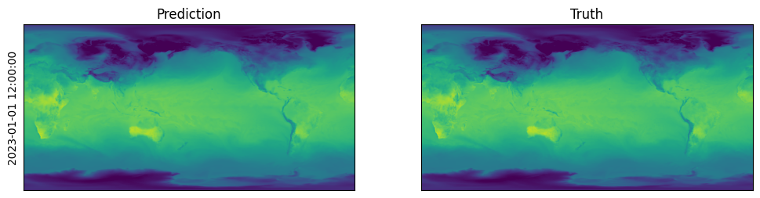

Example#
In this example, we will download ERA5 data for 1 Jan 2023 at $0.25\degree$ resolution and produce predictions using the non-fine-tuned version of Aurora $0.25\degree$.
To begin with, register an account with the CDS and create $HOME/.cdsapirc with the following content:
You can find your UID and API key on your account page.
We now download the ERA5 data.
!pip install cdsapi
Requirement already satisfied: cdsapi in /home/wbruinsma/miniconda3/envs/aurora/lib/python3.10/site-packages (0.7.0)
Requirement already satisfied: cads-api-client>=0.9.2 in /home/wbruinsma/miniconda3/envs/aurora/lib/python3.10/site-packages (from cdsapi) (1.2.0)
Requirement already satisfied: requests>=2.5.0 in /home/wbruinsma/miniconda3/envs/aurora/lib/python3.10/site-packages (from cdsapi) (2.32.3)
Requirement already satisfied: tqdm in /home/wbruinsma/miniconda3/envs/aurora/lib/python3.10/site-packages (from cdsapi) (4.66.5)
Requirement already satisfied: attrs in /home/wbruinsma/miniconda3/envs/aurora/lib/python3.10/site-packages (from cads-api-client>=0.9.2->cdsapi) (24.2.0)
Requirement already satisfied: multiurl in /home/wbruinsma/miniconda3/envs/aurora/lib/python3.10/site-packages (from cads-api-client>=0.9.2->cdsapi) (0.3.1)
Requirement already satisfied: typing-extensions in /home/wbruinsma/miniconda3/envs/aurora/lib/python3.10/site-packages (from cads-api-client>=0.9.2->cdsapi) (4.12.2)
Requirement already satisfied: charset-normalizer<4,>=2 in /home/wbruinsma/miniconda3/envs/aurora/lib/python3.10/site-packages (from requests>=2.5.0->cdsapi) (3.3.2)
Requirement already satisfied: idna<4,>=2.5 in /home/wbruinsma/miniconda3/envs/aurora/lib/python3.10/site-packages (from requests>=2.5.0->cdsapi) (3.7)
Requirement already satisfied: urllib3<3,>=1.21.1 in /home/wbruinsma/miniconda3/envs/aurora/lib/python3.10/site-packages (from requests>=2.5.0->cdsapi) (2.2.2)
Requirement already satisfied: certifi>=2017.4.17 in /home/wbruinsma/miniconda3/envs/aurora/lib/python3.10/site-packages (from requests>=2.5.0->cdsapi) (2024.7.4)
Requirement already satisfied: pytz in /home/wbruinsma/miniconda3/envs/aurora/lib/python3.10/site-packages (from multiurl->cads-api-client>=0.9.2->cdsapi) (2024.1)
Requirement already satisfied: python-dateutil in /home/wbruinsma/miniconda3/envs/aurora/lib/python3.10/site-packages (from multiurl->cads-api-client>=0.9.2->cdsapi) (2.9.0.post0)
Requirement already satisfied: six>=1.5 in /home/wbruinsma/miniconda3/envs/aurora/lib/python3.10/site-packages (from python-dateutil->multiurl->cads-api-client>=0.9.2->cdsapi) (1.16.0)
from pathlib import Path
import cdsapi
# Data will be downloaded here.
download_path = Path("~/downloads")
c = cdsapi.Client()
download_path = download_path.expanduser()
download_path.mkdir(parents=True, exist_ok=True)
# Download the static variables.
if not (download_path / "static.nc").exists():
c.retrieve(
"reanalysis-era5-single-levels",
{
"product_type": "reanalysis",
"variable": [
"geopotential",
"land_sea_mask",
"soil_type",
],
"year": "2023",
"month": "01",
"day": "01",
"time": "00:00",
"format": "netcdf",
},
str(download_path / "static.nc"),
)
print("Static variables downloaded!")
# Download the surface-level variables.
if not (download_path / "2023-01-01-surface-level.nc").exists():
c.retrieve(
"reanalysis-era5-single-levels",
{
"product_type": "reanalysis",
"variable": [
"2m_temperature",
"10m_u_component_of_wind",
"10m_v_component_of_wind",
"mean_sea_level_pressure",
],
"year": "2023",
"month": "01",
"day": "01",
"time": ["00:00", "06:00", "12:00", "18:00"],
"format": "netcdf",
},
str(download_path / "2023-01-01-surface-level.nc"),
)
print("Surface-level variables downloaded!")
# Download the atmospheric variables.
if not (download_path / "2023-01-01-atmospheric.nc").exists():
c.retrieve(
"reanalysis-era5-pressure-levels",
{
"product_type": "reanalysis",
"variable": [
"temperature",
"u_component_of_wind",
"v_component_of_wind",
"specific_humidity",
"geopotential",
],
"pressure_level": [
"50",
"100",
"150",
"200",
"250",
"300",
"400",
"500",
"600",
"700",
"850",
"925",
"1000",
],
"year": "2023",
"month": "01",
"day": "01",
"time": ["00:00", "06:00", "12:00", "18:00"],
"format": "netcdf",
},
str(download_path / "2023-01-01-atmospheric.nc"),
)
print("Atmospheric variables downloaded!")
Static variables downloaded!
Surface-level variables downloaded!
Atmospheric variables downloaded!
from aurora import Aurora
import torch
model = Aurora(use_lora=False) # Pretrained version does not use LoRA.
model.load_checkpoint("wbruinsma/aurora", "aurora-0.25-pretrained.ckpt")
model.eval()
model = model.to("cuda")
/home/wbruinsma/miniconda3/envs/aurora/lib/python3.10/site-packages/tqdm/auto.py:21: TqdmWarning: IProgress not found. Please update jupyter and ipywidgets. See https://ipywidgets.readthedocs.io/en/stable/user_install.html
from .autonotebook import tqdm as notebook_tqdm
/home/wbruinsma/aurora/aurora/model/aurora.py:167: FutureWarning: You are using `torch.load` with `weights_only=False` (the current default value), which uses the default pickle module implicitly. It is possible to construct malicious pickle data which will execute arbitrary code during unpickling (See https://github.com/pytorch/pytorch/blob/main/SECURITY.md#untrusted-models for more details). In a future release, the default value for `weights_only` will be flipped to `True`. This limits the functions that could be executed during unpickling. Arbitrary objects will no longer be allowed to be loaded via this mode unless they are explicitly allowlisted by the user via `torch.serialization.add_safe_globals`. We recommend you start setting `weights_only=True` for any use case where you don't have full control of the loaded file. Please open an issue on GitHub for any issues related to this experimental feature.
d = torch.load(path, map_location="cpu")
!pip install xarray netcdf4
Requirement already satisfied: xarray in /home/wbruinsma/miniconda3/envs/aurora/lib/python3.10/site-packages (2024.7.0)
Requirement already satisfied: netcdf4 in /home/wbruinsma/miniconda3/envs/aurora/lib/python3.10/site-packages (1.7.1.post2)
Requirement already satisfied: numpy>=1.23 in /home/wbruinsma/miniconda3/envs/aurora/lib/python3.10/site-packages (from xarray) (2.0.1)
Requirement already satisfied: packaging>=23.1 in /home/wbruinsma/miniconda3/envs/aurora/lib/python3.10/site-packages (from xarray) (24.1)
Requirement already satisfied: pandas>=2.0 in /home/wbruinsma/miniconda3/envs/aurora/lib/python3.10/site-packages (from xarray) (2.2.2)
Requirement already satisfied: cftime in /home/wbruinsma/miniconda3/envs/aurora/lib/python3.10/site-packages (from netcdf4) (1.6.4)
Requirement already satisfied: certifi in /home/wbruinsma/miniconda3/envs/aurora/lib/python3.10/site-packages (from netcdf4) (2024.7.4)
Requirement already satisfied: python-dateutil>=2.8.2 in /home/wbruinsma/miniconda3/envs/aurora/lib/python3.10/site-packages (from pandas>=2.0->xarray) (2.9.0.post0)
Requirement already satisfied: pytz>=2020.1 in /home/wbruinsma/miniconda3/envs/aurora/lib/python3.10/site-packages (from pandas>=2.0->xarray) (2024.1)
Requirement already satisfied: tzdata>=2022.7 in /home/wbruinsma/miniconda3/envs/aurora/lib/python3.10/site-packages (from pandas>=2.0->xarray) (2024.1)
Requirement already satisfied: six>=1.5 in /home/wbruinsma/miniconda3/envs/aurora/lib/python3.10/site-packages (from python-dateutil>=2.8.2->pandas>=2.0->xarray) (1.16.0)
from aurora import Batch, Metadata
from datetime import datetime
import numpy as np
import torch
import xarray as xr
static_vars_ds = xr.open_dataset(download_path / "static.nc", engine="netcdf4")
surf_vars_ds = xr.open_dataset(download_path / "2023-01-01-surface-level.nc", engine="netcdf4")
atmos_vars_ds = xr.open_dataset(download_path / "2023-01-01-atmospheric.nc", engine="netcdf4")
surf_vars = {
"2t": surf_vars_ds["t2m"].values[:2][None],
"10u": surf_vars_ds["u10"].values[:2][None],
"10v": surf_vars_ds["v10"].values[:2][None],
"msl": surf_vars_ds["msl"].values[:2][None],
}
static_vars = {
"z": static_vars_ds["z"].values[0],
"slt": static_vars_ds["slt"].values[0],
"lsm": static_vars_ds["lsm"].values[0],
}
atmos_vars = {
"t": atmos_vars_ds["t"].values[:2][None],
"u": atmos_vars_ds["u"].values[:2][None],
"v": atmos_vars_ds["v"].values[:2][None],
"q": atmos_vars_ds["q"].values[:2][None],
"z": atmos_vars_ds["z"].values[:2][None],
}
def convert(variables: dict[str, np.ndarray]) -> dict[str, torch.Tensor]:
"""Convert the variables to PyTorch and move them to the GPU."""
return {k: torch.tensor(v, dtype=torch.float32, device="cuda") for k, v in variables.items()}
batch = Batch(
surf_vars=convert(surf_vars),
static_vars=convert(static_vars),
atmos_vars=convert(atmos_vars),
metadata=Metadata(
lat=torch.tensor(surf_vars_ds.latitude.values, dtype=torch.float32, device="cuda"),
lon=torch.tensor(surf_vars_ds.longitude.values, dtype=torch.float32, device="cuda"),
time=(datetime(2023, 1, 1, 6, 0),),
atmos_levels=tuple(int(level) for level in atmos_vars_ds.level.values),
),
)
with torch.no_grad():
pred = model(batch)
!pip install matplotlib
Collecting matplotlib
Downloading matplotlib-3.9.1.post1-cp310-cp310-manylinux_2_17_x86_64.manylinux2014_x86_64.whl.metadata (11 kB)
Collecting contourpy>=1.0.1 (from matplotlib)
Downloading contourpy-1.2.1-cp310-cp310-manylinux_2_17_x86_64.manylinux2014_x86_64.whl.metadata (5.8 kB)
Collecting cycler>=0.10 (from matplotlib)
Downloading cycler-0.12.1-py3-none-any.whl.metadata (3.8 kB)
Collecting fonttools>=4.22.0 (from matplotlib)
Downloading fonttools-4.53.1-cp310-cp310-manylinux_2_17_x86_64.manylinux2014_x86_64.whl.metadata (162 kB)
Collecting kiwisolver>=1.3.1 (from matplotlib)
Downloading kiwisolver-1.4.5-cp310-cp310-manylinux_2_12_x86_64.manylinux2010_x86_64.whl.metadata (6.4 kB)
Requirement already satisfied: numpy>=1.23 in /home/wbruinsma/miniconda3/envs/aurora/lib/python3.10/site-packages (from matplotlib) (2.0.1)
Requirement already satisfied: packaging>=20.0 in /home/wbruinsma/miniconda3/envs/aurora/lib/python3.10/site-packages (from matplotlib) (24.1)
Requirement already satisfied: pillow>=8 in /home/wbruinsma/miniconda3/envs/aurora/lib/python3.10/site-packages (from matplotlib) (10.4.0)
Collecting pyparsing>=2.3.1 (from matplotlib)
Downloading pyparsing-3.1.2-py3-none-any.whl.metadata (5.1 kB)
Requirement already satisfied: python-dateutil>=2.7 in /home/wbruinsma/miniconda3/envs/aurora/lib/python3.10/site-packages (from matplotlib) (2.9.0.post0)
Requirement already satisfied: six>=1.5 in /home/wbruinsma/miniconda3/envs/aurora/lib/python3.10/site-packages (from python-dateutil>=2.7->matplotlib) (1.16.0)
Downloading matplotlib-3.9.1.post1-cp310-cp310-manylinux_2_17_x86_64.manylinux2014_x86_64.whl (8.3 MB)
━━━━━━━━━━━━━━━━━━━━━━━━━━━━━━━━━━━━━━━━ 8.3/8.3 MB 22.3 MB/s eta 0:00:00a 0:00:01
?25hDownloading contourpy-1.2.1-cp310-cp310-manylinux_2_17_x86_64.manylinux2014_x86_64.whl (305 kB)
Downloading cycler-0.12.1-py3-none-any.whl (8.3 kB)
Downloading fonttools-4.53.1-cp310-cp310-manylinux_2_17_x86_64.manylinux2014_x86_64.whl (4.6 MB)
━━━━━━━━━━━━━━━━━━━━━━━━━━━━━━━━━━━━━━━━ 4.6/4.6 MB 56.2 MB/s eta 0:00:00
?25hDownloading kiwisolver-1.4.5-cp310-cp310-manylinux_2_12_x86_64.manylinux2010_x86_64.whl (1.6 MB)
━━━━━━━━━━━━━━━━━━━━━━━━━━━━━━━━━━━━━━━━ 1.6/1.6 MB 62.5 MB/s eta 0:00:00
?25hDownloading pyparsing-3.1.2-py3-none-any.whl (103 kB)
Installing collected packages: pyparsing, kiwisolver, fonttools, cycler, contourpy, matplotlib
Successfully installed contourpy-1.2.1 cycler-0.12.1 fonttools-4.53.1 kiwisolver-1.4.5 matplotlib-3.9.1.post1 pyparsing-3.1.2
import matplotlib.pyplot as plt
fig, ax = plt.subplots(1, 2, figsize=(12, 6))
ax[0].imshow(pred.surf_vars["2t"][0, 0].cpu().numpy() - 270, vmin=-30, vmax=50)
ax[0].set_ylabel(str(pred.metadata.time[0]))
ax[0].set_title("Prediction")
ax[0].set_xticks([])
ax[0].set_yticks([])
ax[1].imshow(surf_vars_ds["t2m"][2].values - 270, vmin=-30, vmax=50)
ax[1].set_title("Truth")
ax[1].set_xticks([])
ax[1].set_yticks([]);
